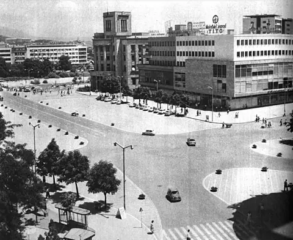
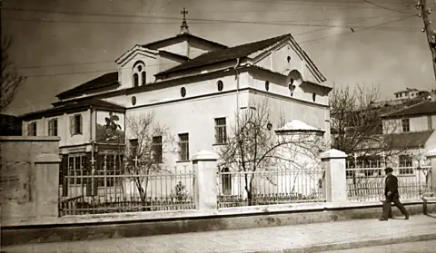
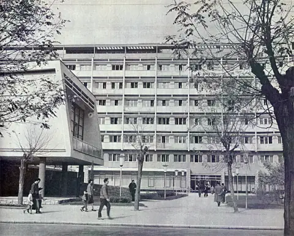
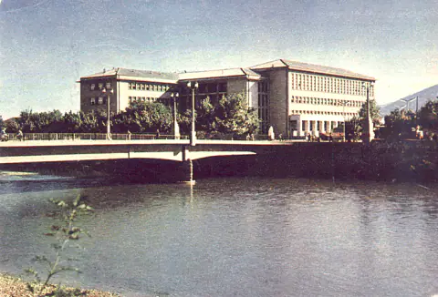

Old orientation map
38 landmarks on the old plan of Skopje. Tap or click a point to see the photograph.


Arab House

Concrete Bridge

Old Bazaar

Main Post Office

City Hospital

City beach

Daut Pasha Hammam

Wooden Bridge

Iron Bridge

Railway station

Home for the Disabled

Stone Bridge

Catholic church

Kuršumli An

Mustafa Pasha Mosque

National Bank

National Library

Officers' Club



Macedonia Square

Freedom Square

Post Office 2

Clock Tower

Fairground



St Demetrius

Holy Saviour

Assembly of Macedonia

Monument to the fallen fighters

The old main street


Student hall

Kale Fortress

Theatre

Kočo Racin Street

11 October Street


Faculty of Philosophy

Hotel Macedonia
Panorama